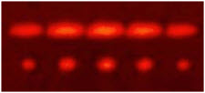
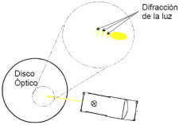

| Objetivo: |
Desarrollar un experimento donde el alumno pueda apreciar el fenómeno óptico de la difracción de un haz de luz. Comprender el fenómeno de la difracción de la luz asociado con la naturaleza de la luz y la forma de propagación de la misma..
|
|
| Introducción: |
|
En física, la difracción es un fenómeno característico de las ondas que consiste en la dispersión y curvado aparente de las ondas
cuando encuentran un obstáculo. La difracción ocurre en todo tipo de ondas, desde ondas sonoras, ondas en la superficie de un
fluido y ondas electromagnéticas como la luz y las ondas de radio. También sucede cuando un grupo de ondas de tamaño finito se
propaga; por ejemplo, por culpa de la difracción, un haz angosto de ondas de luz de un láser deben finalmente divergir en un rayo
más amplio a una distancia suficiente del emisor.
Comparación entre los patrones de difracción e interferencia producidos por una doble rendija (arriba) y cinco rendijas (abajo).El
fenómeno de la difracción es un fenómeno de tipo interferencial y como tal requiere la superposición de ondas coherentes entre sí.
Los efectos de la difracción disminuyen hasta hacerse indetectables a medida que el tamaño del objeto aumenta comparado con la
longitud de onda.
En Italia —posiblemente mientras Newton desarrollaba su famosa Óptica o Tratado de la reflexiones, refracciones, inflexiones y
colores de la luz— un jesuita italiano, Francesco Grimaldi (1618-1663), físico y astrónomo, quien en 1651 dio los nombres que
hasta ahora conservan los accidentes del lado visible de la Luna, descubría un importante fenómeno óptico llamado por él mismo
difracción de la luz. Este fenómeno se presenta siempre que de la luz emitida por una fuente se separa una fracción interponiendo
un cuerpo opaco y esto es lo que da origen a su nombre: división en fracciones.
|
|
|
| Desarrollo Experimental: |
|
Experimento 1:
Antes de comenzar con el presente experimento deberá de cerciorarse que el ambiente de trabajo sea un ambiente con poca
luminosidad o en penumbras, para poder apreciar con facilidad el fenómeno de la difracción.
Coloque las rejillas de la caja de luz en los lados y en el lado del lente (este lado no será ocupado) para que no exista fugas de luz durante el experimento.
Coloque la caja de luz sobre la superficie de trabajo del extremo a utilizar (contrario al extremo del lente), se le insertará como pantalla una placa con un orificio de apenas 1milímetro de diámetro, esta placa debe de insertarse del extremo tal, que el haz de luz
quede lo más cercano de la superficie de trabajo.
Acerque el disco con la cara graduada sobre la superficie del área de trabajo, es decir con la cara posterior del disco, hacia
arriba.
Encienda la caja de luz por medio de la fuente de poder.
Tome el disco óptico y levántelo lentamente, del extremo contrario al extremo más cercano de la caja de luz.
Gradualmente mientras levanta el disco óptico podrá observar el fenómeno de la difracción como se ve en la figura. Se alcanza
la forma más definida de este fenómeno a aproximadamente 60º de inclinación donde se distinguen más definidas las bandas fragmentadas de luz.
Realizar éste mismo procedimiento interponiendo entre el disco y la fuente de luz una rejilla de difracción y comparar los
resultados.
|
| Resultados y Conclusiones: |
|
1) Una vez visualizada la experiencia de la difracción sobre el disco óptico, sobreponga en el disco óptico una hoja en blanco,
realice el arreglo para visualizar la difracción y marque los patrones formados por el fenómeno.
2) Realice una investigación acerca de las aplicaciones de la difracción de las ondas electromagnéticas y acerca del fenómeno de
interferencia.
|
|
|
| Patrón de Difracción Producido por una Rejilla Simple |
|  |
| |
| Figura 1: |
|  |
| |
|